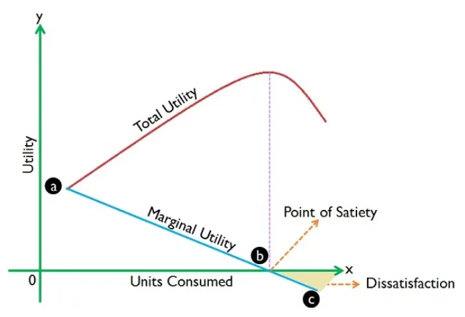

수학의 기초 2. 미분과 적분
chapter 1. 미분
세상에는 정지해 있는 것이 없다. 우리가 함께 움직이고 있기 때문에 느끼지 못할 뿐, 지구는 자전 속도로 약 시속 1,660킬로미터, 공전 속도로는 약 시속 10만 7천5백 킬로미터로 끊임없이 움직이고 있다. 이러한 사실은 코페르니쿠스가 제안한 지동설에 바탕을 두고 있다. 갈릴레오는 망원경을 통해 목성의 위성을 관찰하고 금성의 위상 변화를 확인함으로써 지동설을 뒷받침했다. 케플러는 행성의 궤도가 완전한 원이 아니라 타원임을 밝혔으며, 이는 지동설의 정밀함을 더하는 데 기여했다. 같은 시대를 살았던 뉴턴은 왜 달은 하늘에 떠 있는 반면, 사과는 땅으로 떨어지는지를 고민하며 만유인력의 법칙을 세우고 중력 개념을 정립했다.
이러한 천체의 움직임과 자연 현상의 본질은 결국 변화에서 출발한다. 미분은 변화의 순간을 정량적으로 포착하는 방법이다. 상태가 변할 때, 우리는 그 변화의 양상에 주목하게 된다. 거리의 변화는 속도로, 속도의 변화는 가속도로 표현되며, 경제학에서는 비용과 효용의 변화가 한계비용과 한계효용으로 나타난다.
미분은 함수의 특정 지점에서 접선의 기울기를 계산하는 도구다. 이 접선의 기울기는 함수가 그 점에서 얼마나 빠르게 증가하거나 감소하는지를 나타낸다. 다항함수, 지수함수, 로그함수, 삼각함수 등 대부분의 함수는 미분 가능하며, 특히 통계학에서 자주 사용되는 함수들은 거의 예외 없이 미분이 가능한 형태를 가지고 있다.
통계학에서 미분은 여러 분야에 활용된다. 회귀분석에서는 오차의 제곱합을 최소화하기 위해 미분을 통해 회귀계수를 추정하고, 확률 밀도 함수의 극댓값을 찾거나 함수의 모양을 분석할 때도 미분이 필수적이다. 또한 최대우도법이나 베이지안 추정 등에서도 목적함수의 최적값을 구하기 위한 과정에 미분이 사용된다.
이처럼 미분은 단순히 수학적인 연산을 넘어서, 변화와 움직임을 이해하는 데 필요한 핵심 개념으로 작용한다. 자연의 움직임을 설명하고자 했던 과학자들의 질문이 결국 수학적 사고와 연결되듯, 통계학에서도 미분은 현상을 분석하고 설명하는 데 중요한 역할을 수행한다.
1. 평균변화율 average rate of change
구간 \(a \leq x \leq b\)에서 함수 \(f\)의 평균 변화량으로 \(\frac{rise}{run} = \frac{\Delta y}{\Delta x} = \frac{f(b) - f(b)}{b - a}\)이다.
\(a \leq x \leq b\) 구간에서 단위당 평균적으로 함수의 변화량을 측정한 것이다. 평균변화량은 고속도로 구간단속에 이용된다. 미분은 지점 과속 단속에 이용된다.
측정 1: 구간단속 시작, 종료 지점에서 과속여부 측정 (미분 응용)
측정 2: 예를 들어 구간 거리가 6km라 하자. 2분만에 구간을 통과했다면 평균속도는 \(\frac{6 - 0}{2 - 0} = 3km/min.\)분당 3km를 달렸으므로 시간당 180km를 달렸으니 과속이 되는 것입니다. (평균변화량)
2. 미분 정의
함수 \(f(x)\)의 임의의 점 \(x = a\)에서의 미분값 \(f'(a)\)는 다음과 같이 정의된다. \(f'(a) = \lim_{h \rightarrow 0}\frac{f(a + h) - f(a)}{h}\)
\(\frac{f(a + h) - f(a)}{h}\)는 Fermat’s Difference Quotient로 불리며, 점 \(a\)에서의 평균 변화율을 나타낸다.
극한이 존재하면 \(f'(a)\)는 \(x = a\)에서의 접선의 기울기로 해석할 수 있다.
미분 가능성: \(f'(a)\)가 존재하면, 점 \(x = a\)에서 함수 \(f(x)\)는 미분 가능하다고 한다. 함수 \(f(x)\)가 정의역 전체에서 미분 가능하, 함수 f(x)는 미분 가능 함수이다.
미분의 기하학적 해석: 미분값 \(f'(a)\)는 곡선 \(y = f(x)\)의 점 \(x = a\)에서의 접선의 기울기를 의미한다. \(h\)가 0으로 가까워질수록 평균 변화율은 접선의 기울기에 점점 가까워진다.
미분 가능성과 연속성: 함수 \(f(x)\)가 점 \(x = a\)에서 미분 가능하면 \(f(x)\)는 반드시 그 점에서 연속이다. 하지만, 연속이라고 해서 항상 미분 가능한 것은 아니다. 예를 들어, 절대값 함수 가능하지 않다.

3. 미분 규칙
상수 함수의 미분 \[\frac{d}{dx}\lbrack c\rbrack = 0\]
거듭제곱 함수의 미분 \[\frac{d}{dx}\lbrack x^{n}\rbrack = nx^{n - 1}, f(x) = x^{n}(n \in \mathbb{R})\]
【예제】 \(f(x) = 2\sqrt{x}\) 을 미분하시오.
\[f'(x) = 2(\frac{1}{2})x^{1/2 - 1} = x^{- 1/2} = \frac{1}{\sqrt{x}}\]
상수배의 미분: \[\frac{d}{dx}\lbrack c \cdot f(x)\rbrack = c \cdot \frac{d}{dx}\lbrack f(x)\rbrack\]
합/차의 미분
\[\frac{d}{dx}\lbrack f(x) \pm g(x)\rbrack = \frac{d}{dx}\lbrack f(x)\rbrack \pm \frac{d}{dx}\lbrack g(x)\rbrack\]
곱의 미분
\[\frac{d}{dx}\lbrack f(x) \cdot g(x)\rbrack = f'(x) \cdot g(x) + f(x) \cdot g'(x)\]
나눗셈의 미분
\(\frac{d}{dx}\left\lbrack \frac{f(x)}{g(x)} \right\rbrack = \frac{f'(x) \cdot g(x) - f(x) \cdot g'(x)}{\lbrack g(x)\rbrack^{2}}\), \(g(x) \neq 0\)
체인룰 chain rule 연쇄규칙
\[\frac{d}{dx}\lbrack f(g(x))\rbrack = f'(g(x)) \cdot g'(x)\]
【예제】 \(f(x) = 2\sqrt{3x^{2} - 1}\)을 미분하시오.
바깥부분 미분하고 안쪽 부분 그대로 적는다.
\(2*(1/2){\sqrt{(3x^{2} - 1)}}^{- 1/2}\) 그리고 안쪽부분을 미분한다.
\[f'(x) = {\sqrt{(3x^{2} - 1)}}^{- 1/2}6x = \frac{6x}{\sqrt{3x^{2} - 1}}\]
로그함수 미분 \[\frac{d}{dx}\lbrack\log_{a}(x)\rbrack = \frac{1}{x\ln(a)},x > 0\]
\[\frac{d}{dx}\lbrack\ln(x)\rbrack = \frac{1}{x},x > 0\]
【예제】 \(f(x) = ln(x^{2} - 1)\)을 미분하시오.
연쇄법칙 적용 : \(f'(x) = \frac{1}{x^{2} - 1}2x\)
지수함수 미분
\[\frac{d}{dx}\lbrack a^{x}\rbrack = a^{x}\ln(a)\]
\[\frac{d}{dx}\lbrack e^{x}\rbrack = e^{x}\]
import sympy as sp
# 변수와 함수를 정의
x = sp.Symbol('x')
f = 5*(x**2 - 2*x)**2
# 함수 입력을 파싱하여 미분
func = sp.sympify(f)
derivative = sp.diff(func, x)4. 미분 응용
(1) 최대, 최소
1차 미분정리
함수 f(x) 가 일정 구간 (a, b) 안의 모든 점에서 미분 가능하고, 구간 내 임의의 점 c 에서 1차 미분이 0이면, f(x) 함수는 c 점에서 지역 최대값이나 최소값을 갖는다. 이는 페르마의 정리에 Fermat’s 해당하며, 극대값 또는 극소값이 존재하는 필수 조건을 설명한다.
함수 f(x) 가 c 에서 미분 가능하고, 극값이 c 에서 존재하면, 반드시 \(f'(c) = 0\)이어야 한다.
다만, \(f'(c) = 0\)이라고 해서 반드시 극값이 존재하는 것은 아니며, 이는 필요조건일 뿐 충분조건은 아니다. 극값의 존재를 확실히 판단하려면 2차 도함수 테스트나 첫 도함수의 부호 변화를 추가로 고려해야 한다.
증가 함수와 감소 함수
함수 f(x)가 구간 \(I\)에서 정의되어 있을 때, \(x_{1} < x_{2} \Longrightarrow f(x_{1}) \leq f(x_{2})\) 이면 구간 \(I\)에서 증가 함수이다.
\(x_{1} < x_{2} \Longrightarrow f(x_{1}) \geq f(x_{2})\) 이면 구간 \(I\)에서 감소 함수이다.
1차 미분과 증가·감소 함수의 관계
함수 f(x) 가 구간 \(I\)에서 미분 가능하다면,
\(f'(x) > 0\) 이면, f(x) 는 구간 \(I\)에서 엄격히 증가한다
\(f'(x) < 0\) 이면, f(x) 는 구간 \(I\)에서 엄격히 감소한다.
오목성 concavity 정의
함수 f(x) 의 기울기가 감소하는 경우 \(f''(x) < 0\),
함수 f(x) 는 concave down (오목 아래)이다.
그래프가 아래로 휘어진 모양을 갖는다.
함수 f(x) 의 기울기가 증가하는 경우 \(f''(x) > 0\),
함수 f(x) 는 concave up (오목 위)이다.
그래프가 위로 휘어진 모양을 갖는다.
변곡점 inflexion point 정의
함수 \(f(x)\)의 오목성이 변하는 점이 있을 때, 이 점을 변곡점이라고 한다. 즉, \(f(x)\)가 \(f’’(x) > 0\)에서 \(f’’(x) < 0\)로 바뀌거나 \(f’’(x) < 0\)에서 \(f’’(x) > 0\)로 바뀌는 점이 변곡점이다.”
1차 미분과 2차 미분을 이용한 최대, 최소 판단
주어진 \(f'(c) = 0\)에서, \(f''(c)\)를 확인한다.
\(f''(c) > 0\) 이면 \(x = c\)에서 (지역) 최소값
\(f''(c) < 0\) 이면 \(x = c\)에서 (지역) 최대값
\(f''(c) = 0\) 이고 \(f''(x)\) 부호가 바뀌면 \(x = c\)에서 변곡점
(2) 통계학 응용
단순 회귀모형 \[y_{i} = \beta_{0} + \beta_{1}x_{i} + \epsilon_{i},i = 1,2,\ldots,n\]
OLS 추정치 \[\text{Minimize:}S(\beta_{0},\beta_{1}) = \overset{n}{\sum_{i = 1}}(y_{i} - \beta_{0} - \beta_{1}x_{i})^{2}\]
오차 제곱합 \(S(\beta_{0},\beta_{1})\)을 \(\beta_{0}\)와 \(\beta_{1}\)에 대해 편미분한 뒤 0으로 설정하여 최소값(OLS)을 찾는다.
정규방정식
\[\frac{\partial S}{\partial\beta_{0}} = - 2\overset{n}{\sum_{i = 1}}(y_{i} - \beta_{0} - \beta_{1}x_{i}) = 0\]
\[\overset{n}{\sum_{i = 1}}y_{i} = n\beta_{0} + \beta_{1}\overset{n}{\sum_{i = 1}}x_{i}\]
\[\frac{\partial S}{\partial\beta_{1}} = - 2\overset{n}{\sum_{i = 1}}x_{i}(y_{i} - \beta_{0} - \beta_{1}x_{i}) = 0\]
\[\overset{n}{\sum_{i = 1}}x_{i}y_{i} = \beta_{0}\overset{n}{\sum_{i = 1}}x_{i} + \beta_{1}\overset{n}{\sum_{i = 1}}x_{i}^{2}\]
두 식을 함께 사용하여 \(\beta_{0}\)와 \(\beta_{1}\)를 계산한다.
\[\beta_{1} = \frac{\sum_{i = 1}^{n}(x_{i} - \overline{x})(y_{i} - \overline{y})}{\sum_{i = 1}^{n}(x_{i} - \overline{x})^{2}} = \frac{\text{Cov}(x,y)}{\text{Var}(x)}\]
\[\beta_{0} = \overline{y} - \beta_{1}\overline{x}\]
import numpy as np
import matplotlib.pyplot as plt
from scipy.optimize import curve_fit
# 가상의 데이터 생성 n=20
np.random.seed(0)
x_data = np.linspace(-5, 5, 20)
y_data = 2 * x_data**3 - 3 * x_data**2 + 4 * x_data + 10 + np.random.normal(0, 10, 20)
# 직선 적합 함수
def linear(x, a, b):
return a * x + b
# 2차 함수 적합 함수
def quadratic(x, a, b, c):
return a * x**2 + b * x + c
# 3차 함수 적합 함수
def cubic(x, a, b, c, d):
return a * x**3 + b * x**2 + c * x + d
# 최소자승법을 이용한 직선, 2차, 3차 적합
params_linear, _ = curve_fit(linear, x_data, y_data)
params_quadratic, _ = curve_fit(quadratic, x_data, y_data)
params_cubic, _ = curve_fit(cubic, x_data, y_data)
# 적합된 함수의 값을 계산
y_fit_linear = linear(x_data, *params_linear)
y_fit_quadratic = quadratic(x_data, *params_quadratic)
y_fit_cubic = cubic(x_data, *params_cubic)
# Residual Sum of Squares 계산
rss_linear = np.sum((y_data - y_fit_linear) ** 2)
rss_quadratic = np.sum((y_data - y_fit_quadratic) ** 2)
rss_cubic = np.sum((y_data - y_fit_cubic) ** 2)
# 최소자승법을 이용한 직선, 2차, 3차 적합
params_linear, _ = curve_fit(linear, x_data, y_data)
params_quadratic, _ = curve_fit(quadratic, x_data, y_data)
params_cubic, _ = curve_fit(cubic, x_data, y_data)
# 적합된 함수의 값을 계산
y_fit_linear = linear(x_data, *params_linear)
y_fit_quadratic = quadratic(x_data, *params_quadratic)
y_fit_cubic = cubic(x_data, *params_cubic)
# Residual Sum of Squares 계산
rss_linear = np.sum((y_data - y_fit_linear) ** 2)
rss_quadratic = np.sum((y_data - y_fit_quadratic) ** 2)
rss_cubic = np.sum((y_data - y_fit_cubic) ** 2)
# 그래프 그리기
plt.figure(figsize=(10, 6))
plt.scatter(x_data, y_data, label='data', color='black')
plt.plot(x_data, y_fit_linear, label='Linear fit (y = {:.2f}x + {:.2f}) : RSS={:.2f}'.format(params_linear[0], params_linear[1],rss_linear), color='blue')
plt.plot(x_data, y_fit_quadratic, label='Quardratic fit (y = {:.2f}x^2 + {:.2f}x + {:.2f}) : RSS={:.2f}'.format(params_quadratic[0], params_quadratic[1], params_quadratic[2],rss_quadratic), color='green')
plt.plot(x_data, y_fit_cubic, label='Cubic fit (y = {:.2f}x^3 + {:.2f}x^2 + {:.2f}x + {:.2f}) : RSS={:.2f}'.format(params_cubic[0], params_cubic[1], params_cubic[2], params_cubic[3],rss_cubic), color='red')
plt.axhline(0, color='grey', lw=0.5, ls='--')
plt.axvline(0, color='grey', lw=0.5, ls='--')
plt.title('fit by OLS')
plt.xlabel('x')
plt.ylabel('y')
plt.legend()
plt.grid()
plt.show()(3) 한계효용체감의 법칙
한계효용 marginal utility은 재화가 증가 혹은 감소함에 따라 주관적으로 매겨지는 경제적 효용(혹은 가치)의 관계에 대한 개념으로 합리적인 경제에서 인간 행동은 자신에게 가장 시급한 욕구를 충족하는 일을 가장 먼저 하거나 가치를 두는 특성이 있다. 따라서 어떤 사람이 재화나 용역을 이용하여 효용을 얻고자 할 때 주관적으로 판단되는 욕망 충족의 정도인 효용의 가치가 높은 것부터 낮은 것 쪽으로 추구한다. 재화나 용역의 한계효용은 그 재화나 용역을 사용하는 것을 증가하거나 감소함에 따라 변화한 가치의 양을 상정한 것인데 이런 변화에서 추가의 1단위 즉 경계인 단위에서의 재화나 용역의 효용을 한계효용이라고 한다.[위키피디아]

총효용 total utility 은 주어진 기간 동안 소비된 특정 상품의 모든 단위에서 얻은 총만족입니다. 한계효용 marginal utility 마지막 소비량에서 상품 소비의 1단위 변화로 인해 발생하는 총 효용의 변화이다. 더 많은 단위의 상품을 구매하면 한계 효용은 감소하기 시작하지만 총 효용은 계속해서 감소 비율이 줄어든다. 한계효용이 0가 되는 포화점 satiety에 이르렀을 때 이 지점에서의 총효용은 최대가 된다. 이 지점에서 소비가 더 증가하면 한계 효용은 음수가 되고 총 효용은 감소하기 시작한다.
(4) Cobb-Douglas 생산함수
\(Q = f(K,L) = AL^{\alpha}K^{\beta}\), \(Q\)= 생산, \(K\)=자본, \(L\)=노동, \(A,\alpha,\beta\)는 모수이다. \(K,L\)에 대하여 각각 편미분 하면 다음과 같다.
- 양변에 로그를 취한다. \(ln(Q) = lnA + \alpha lnL + \beta lnK\)
- \(\frac{\partial(lnQ)}{\partial L} = \alpha\) : 한계 노동 생산량
- \(\frac{\partial(lnQ)}{\partial K} = \beta\) : 한계 자본 생산량
chapter 2. 적분
고대 수학자들은 직선으로 이루어진 도형의 면적을 비교적 쉽게 계산할 수 있었습니다. 사각형, 삼각형, 평행사변형, 사다리꼴과 같은 도형은 밑변과 높이를 활용한 간단한 공식을 통해 면적을 구할 수 있었기 때문입니다. 그러나 곡선이 포함된 도형의 면적을 계산하는 문제는 훨씬 더 복잡한 도전 과제였습니다.
곡선이 포함된 도형의 면적을 구하기 위해 현대 수학에서는 적분이라는 개념이 도입되었습니다. 이는 고대 그리스의 수학자 아르키메데스가 처음으로 탐구한 주제 중 하나였습니다. 아르키메데스는 곡선 아래의 면적을 구하기 위해 곡선을 아주 작은 직사각형들로 나누고, 그 면적을 합산하여 근사값을 구하는 방식을 사용했습니다. 이 과정은 시간이 지나며 점점 더 체계적으로 발전하였고, 마침내 미적분학으로 이어졌습니다.
아이작 뉴턴과 고트프리트 라이프니츠는 아르키메데스의 아이디어를 발전시켜 적분과 미분이라는 두 가지 핵심 개념을 정립하였고, 이를 통해 곡선 아래의 면적을 정확히 계산할 수 있는 도구를 완성했습니다. 오늘날 우리가 사용하는 적분법은 이들의 연구에 기반을 두고 있으며, 곡선의 면적뿐만 아니라 물리학, 공학, 경제학 등 다양한 분야에서 중요한 역할을 하고 있습니다.
적분은 통계학에서 확률 계산, 기대값, 분산, 베이지안 추론 등 다양한 개념과 도구에 중요한 역할을 합니다. 확률을 곡선 아래 면적으로 해석하는데서부터 시작해, 통계적 추론의 기초를 형성하는 데 적분이 필수적입니다. 이러한 적분 개념은 통계학 이론뿐만 아니라 데이터 분석, 머신러닝, 신뢰구간 계산 등 실무적인 응용에서도 널리 사용됩니다.
1. 부정 적분
함수 F(x) 가 주어진 함수 f(x) 에 대해 정의역의 모든 점에서 \(F'(x) = f(x)\)를 만족한다면, F(x) 를 f(x) 의 역-미분 anti-derivative 또는 원시함수 primitive function 합니다. 이는 적분이 미분의 역연산임을 의미합니다.
적분이 미분의 역연산이라는 사실을 처음 체계적으로 증명하고 이를 수학적으로 정립한 사람들은 아이작 뉴턴(Isaac Newton)과 고트프리트 라이프니츠(Gottfried Wilhelm Leibniz)입니다. 이들은 독립적으로 미적분학의 기본 개념을 발전시켰으며, 이 과정에서 적분과 미분의 관계를 설명한 미적분학의 기본정리를 도출했습니다.
정적분과 미분의 관계
특정 구간에서의 정적분은 미분을 통해 함수의 값을 복원할 수 있습니다. 예를 들어, 함수 f(x) 에 대해 다음과 같은 정적분이 있을 때,
\(F(x) = \int_{a}^{x}f(t)dt\). 이를 x 에 대해 미분하면 \(\frac{d}{dx}F(x) = f(x)\)
즉, 적분을 통해 구한 누적 변화량을 다시 미분하면, 원래의 함수로 돌아갑니다.
적분과 미분은 서로 반대되는 과정처럼 보이지만, 실제로는 상호보완적입니다. 적분은 함수의 누적적인 변화(예: 곡선 아래의 면적)를 측정하며, 미분은 순간적인 변화(예: 기울기)를 측정합니다.
2. 정적분
(1) 정적분 개념
정적분(면적)은 부정적분(역-미분 함수)과는 다른 접근 방식에서 출발합니다. 그러나 이 두 개념은 17세기에 뉴턴(Newton)과 라이프니츠(Leibniz)에 의해 서로 밀접하게 연결되었고, 이를 통합하여 적분(integral)이라고 명명하였습니다.
우선, 정적분의 개념을 살펴보겠습니다. 구간 [a, b]에서 함수 f(x) 아래의 면적을 어떻게 구할 수 있을까요? 이를 위해 구간 [a, b]를 여러 작은 구간으로 나눈 다음, 각 구간에서 직사각형의 면적을 계산하여 합산하는 방법을 생각할 수 있습니다. 이러한 직사각형의 면적 합은 점점 더 작은 구간으로 나눌수록 실제 면적에 근사하게 됩니다.
함수와 x-축 사이에 형성된 이 면적은 정적분이라 하며, 이는 구간 [a, b]에서 함수 f(x)와 x-축 사이의 공간에 해당합니다. 직사각형을 이용해 근사한 면적은 실제 면적보다 클 수도 있고 작을 수도 있습니다. 하지만 구간을 점점 더 세분화하면, 이 근사값은 실제 정적분 값에 수렴하게 됩니다.
정적분은 함수의 곡선 아래의 면적을 계산하는 방법으로 출발했지만, 부정적분(역-미분 함수)과의 연결을 통해 더욱 강력한 수학적 도구로 발전하였습니다.
(2) 정적분과 부정적분의 관계
함수 f(x) 가 구간 [a, b]에서 연속일 때:
부정적분(역-미분 함수): 함수 F(x) 가 f(x) 의 부정적분이라면 \(F'(x) = f(x)\)
정적분(구간의 면적): 함수 f(x) 의 정적분은 구간 [a, b]에서 f(x) 와 x -축 사이의 면적을 나타냅니다. \(\int_{a}^{b}f(x)dx\)
뉴턴-라이프니츠 정리: 부정적분과 정적분은 다음과 같이 연결됩니다. \(\int_{a}^{b}f(x)dx = F(b) - F(a)\)
여기서 F(x) 는 f(x) 의 부정적분입니다.
이 정리는 정적분(구간에서의 면적 계산)이 부정적분(역-미분 함수)을 사용하여 계산될 수 있음을 보여줍니다.
(3) 정적분 규칙
특정 점에서의 확률
\[\int_{a}^{a}f(x)dx = 0\]
이는 구간의 길이가 0 일 때, 정적분의 결과가 항상 0 임을 나타냅니다(통계적으로: 연속 확률변수에서 특정 점에서의 확률은 0 이다).
구간 순서 반대
\[\int_{a}^{b}f(x)dx = - \int_{b}^{a}f(x)dx\]
구간의 순서를 바꾸면 정적분의 부호가 반대가 됩니다.
상수 배율
\[\int_{a}^{b}c \cdot f(x)dx = c\int_{a}^{b}f(x)dx(\text{c is constant})\]
적분 내부에 상수가 곱해져 있을 경우, 상수를 적분 기호 밖으로 꺼낼 수 있습니다.
합과 차
\[\int_{a}^{b}\left( f(x) \pm g(x) \right)dx = \int_{a}^{b}f(x)dx \pm \int_{a}^{b}g(x)dx\]
적분은 덧셈과 뺄셈 연산에 대해 분배법칙을 따릅니다.
Domination Rule
만약 \(f(x) \geq 0\)가 구간 [a, b]에서 항상 성립하면
\(\int_{a}^{b}f(x)dx \geq 0\) 이다. 통계적으로 확률변수의 분포 함수는 항상 0 이상 이므로, 확률값은 항상 0 이상이다.
부등식 관계
만약 \(f(x) \leq g(x)\)가 구간 [a, b]에서 항상 성립하면
\(\int_{a}^{b}f(x)dx \leq \int_{a}^{b}g(x)dx\) 이다.
구간 쪼개기
\[\int_{a}^{c}f(x)dx + \int_{c}^{b}f(x)dx = \int_{a}^{b}f(x)dx\]
적분 구간을 나누어 계산할 수 있습니다.
확률밀도함수 전체 구간
\(\int_{- \infty}^{\infty}f(x)dx = 1\). 확률밀도함수(PDF)는 전체 구간에서의 적분, 확률의 총합이 1 임을 나타냅니다.
지수함수 적분
\[\int a^{x}dx = \frac{a^{x}}{\ln a} + C(a > 0,a \neq 1)\]
\[\int e^{x}dx = e^{x} + C\]
로그함수 적분
\[\int\log_{a}(x)dx = \frac{1}{\ln(a)}\left( x\ln(x) - x \right) + C\]
\[\int\ln(x)dx = x\ln(x) - x + C\]
특수한 적분
\[\int\frac{1}{x} = ln|x| + C\]
치환적분
함수 g(x) 가 x 에 대한 미분가능한 함수이고, f(u) 가 u = g(x) 에 대한 함수라고 가정하겠습니다.
\[\int f(g(x)) \cdot g'(x)dx = \int f(u)du\]
\[u = g(x) , du = g'(x)dx\]
【사례】 \(\int x \cdot e^{x^{2}}dx = \frac{1}{2}e^{x^{2}} + C\)
\(u = x^{2}\)로 치환하면, \(du = 2xdx\). 따라서 \(xdx = \frac{1}{2}du\)
\(\int x \cdot e^{x^{2}}dx = \int e^{u} \cdot \frac{1}{2}du = \frac{1}{2}\int e^{u}du\)=\(\frac{1}{2}\int e^{u}du = \frac{1}{2}e^{u} + C\)
\(u = x^{2}\) 이므로 \(\int x \cdot e^{x^{2}}dx = \frac{1}{2}e^{x^{2}} + C\) 이다.
부분적분
함수 u(x) 와 v(x) 가 미분 가능할 때, 다음 공식이 성립합니다:
\[\int udv = uv - \int vdu\]
\(u\): 미분할 함수 (\(u \rightarrow du\))
\(dv\): 적분할 함수 (\(dv \rightarrow v\))
【사례】 \(\int xe^{x}dx\)
1) 함수 선택: \(u = x,dv = e^{x}dx\)
2) 미분 및 적분: \(u \rightarrow du = dx\),\(dv \rightarrow v = e^{x}\)
3) 부분적분 공식 적용: \(\int xe^{x}dx = uv - \int vdu\)
\(= xe^{x} - \int e^{x}dx\)\(= xe^{x} - e^{x} + C\).
【사례】 \(\int_{0}^{1}x^{2} + \sqrt{x}dx\) 구하시오.
\(f(x) = x^{2} + \sqrt{x}\)이므로 \(F(x) = \frac{1}{3}x^{3} + \frac{2}{3}x^{\frac{3}{2}}\)
\(F(1) = 1\), \(F(0) = 0\)이므로 1이다.
\[\int_{0}^{1}x^{2} + \sqrt{x}dx = \frac{1}{3}x^{3} + \frac{2}{3}x^{\frac{3}{2}}\rbrack_{0}^{1} = 1 - 0 = 1\]
#부정적분
from sympy import *
x=Symbol('x')
integrate(x**2+x**(0.5), x)\[ x^3/3 + 0.66667x^{1.5} \]
#정적분
from scipy.integrate import quad
def integrand(x):
return x**2+x**(0.5)
quad(integrand,0, 1)【결과】 첫번째 값은 적분값이고 두 번째는 적분 값을 얼마나 근사하게 계산하였는지 값이다. 완벽한 값이면 0이어야 하나 출력된 값은 0.0(14개)11…이다. root는 실제 근이다. (1.0, 1.1102230246251565e-15)
【사례】 표준 정규확률분포함수\(\int_{0}^{\infty}\frac{1}{\sqrt{2\pi}}e^{- \frac{x^{2}}{2}}dx\) 구하시오.
#부정적분
from sympy import *
import numpy as np
x=Symbol('x')
integrate(1/(2*np.pi)**0.5*exp(-x**2/2), x)\[ 0.199471140200716 \sqrt{2} \sqrt{\pi} \, \mathrm{erf}\left( \frac{\sqrt{2}x}{2} \right) \]
import numpy as np
#정적분
from scipy.integrate import quad
def integrand(x):
return 1/(2*np.pi)**0.5*exp(-x**2/2)
quad(integrand,0,np.inf)【결과】 (0.49999999999999983, 5.08909572547112e-09)
(4) 표적분 tabular integral
표 적분은 부분적분을 용이하게 한다. 미분 부분 \(f(x)\)는 미분하면서 차수가 용이해야 하고, 적분함수 \(g(x)\)는 용이하게 적분할 수 있어야 한다.
(방법1) 미분 부분이 0이 될 때까지 미분과 적분을 반복 시행한다.
\[\int_{a}^{b}udv = (1)*(a) - (2)*(b) + (3)(c)...\rbrack_{a}^{b}\]
(방법2)한 번만 미분하고 \(\int_{a}^{b}udv = (1)*(a) - \int_{a}^{b}(2)*(b)dx\)
【예제】 \(\int_{0}^{\infty}xe^{- x}dx\) 표 적분하시오.
(방법1) \(x( - e^{- x}) - e^{- x}\rbrack_{0}^{\infty} = 1\)
(방법2) \(x( - e^{- x})\rbrack_{0}^{\infty} - \int_{0}^{\infty} - e^{- x} = 1\)으로 계산한다.
【예제】 \(\int_{1}^{2}ln(x)dx\) 표 적분하시오.

\[\int_{1}^{2}ln(x)dx = ln(x)x\rbrack_{1}^{2} - \int_{0}^{1}1dx = 2ln(2) - ln(1) - x\rbrack_{0}^{1} = 0.386\]
3. 적분 응용
연속형 확률분포의 확률밀도함수
연속형 확률변수 X 의 확률밀도함수 f(x) 는 특정 구간에서 확률을 계산하는 데 사용됩니다. 이때 확률은 적분을 통해 구합니다:
\[P(a \leq X \leq b) = \int_{a}^{b}f(x)dx\]
f(x) 는 음수가 아니며, 전체 구간에서의 적분값은 항상 1이 됩니다:
\[\int_{- \infty}^{\infty}f(x)dx = 1\]
【예제】 정규분포 N(0, 1) 에서 \(P( - 1 \leq Z \leq 1) = \int_{- 1}^{1}\phi(z)dz\) 이다. 여기서 \(\phi(z) = \frac{1}{\sqrt{2\pi}}e^{- z^{2}/2}\)는 표준정규분포의 확률밀도함수입니다.
누적확률분포함수 cumulative probability density fuction
기대값
연속형 확률변수 X 의 확률밀도함수 f(x)라 하면 기대값은 \(E(X) = \int xf(x)dx\) 이다.
적분과 백분위값
백분위값 percentile은 확률분포에서 특정 비율의 누적 확률을 기준으로 하는 값입니다. P번째 백분위값은 확률변수 X의 값 \(X_{P}\)로, 확률변수가 \(X_{P}\)이하일 확률이 \(\frac{P}{100}\)이 되는 값입니다.
\[F(x_{P}) = \int_{- \infty}^{x_{P}}f(x)dx = \frac{P}{100}\]
- \(f(x)\): 확률밀도함수(PDF)
- \(F(x)\): 누적분포함수(CDF)
- \(x_{P}\): \(P\)번째 백분위값